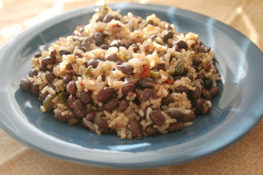

Instant Pot Rice and Beans
Return Home

Description
521 Calories, 37.8g of protein
Rice and beans with added tofu and vegetables.
Ingredients
- 1/2 White Rice
- 1/2 of dry beans that have been cooked (cooked volume is greater than 1/2 cup)
- 2/3 cups of frozen mixed vegetables
- 1/2 teaspoon of salt
- 1/3 block of extra firm tofu
Steps
- Place white rice into the pot
- Place the prepared beans into the pot
- Add salt
- Add the mixed vegetables
- Add 1.5 cups of water, mix contents
- Push the rice button on the instant pot
- Cook for 12 minutes on high
- Rapidly release the pressure
- Add tofu, mix contents
- Let cool and serve